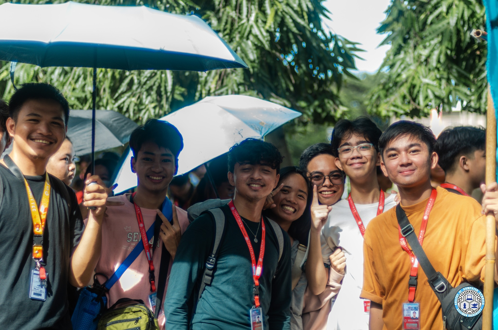
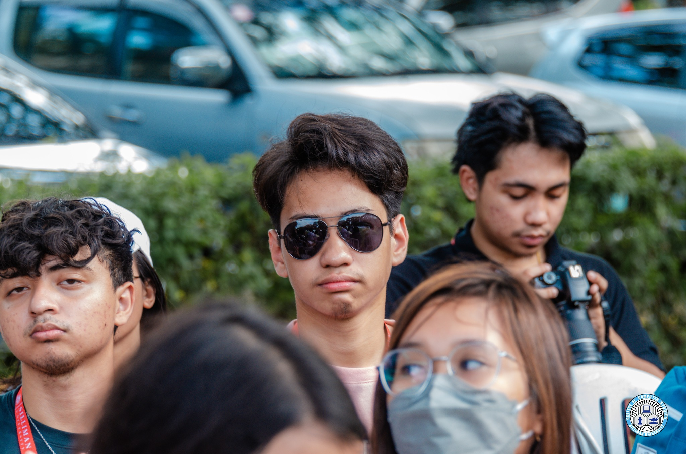
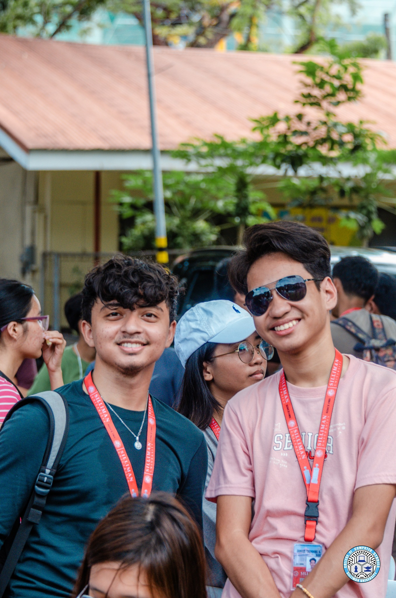
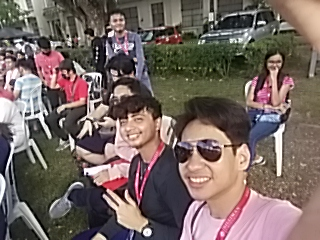

Activity Name:
FRESHIE WALK
Category:
Culture
Organizer:
SUSG COMMITTEE ON STUDENT ORGANIZATIONS
Date of Event:
The SU Experience of Ernest Rojo
Activity Name:
Category:
Organizer:
Date of Event:
Freshie Walk, an annual event at Silliman University, took place as freshmans from various colleges walked from Ariniego Art Gallery to the University's Amphitheater. The event, mandatory for freshman student throughout the university, aimed to foster camaraderie among the new enrollees. My role in the activity was that of a participant, engaging with fellow freshmans and forming connections within the university community.
Participating in Freshie Walk provided an opportunity to witness the sheer number of freshmans across the entire university, exceeding expectations. The event served as a platform to meet new people, establishing connections that would evolve into lasting friendships. The surprise element was the sense of community that extended beyond the boundaries of my college. The experience impacted my view of college life positively, offering a warm and inclusive initiation.
The experience broadened my worldview by emphasizing the significance of community and diversity within the university setting. Learning from this, I aim to maintain active involvement in university activities to continue building connections. The benefits of such events lie in fostering a sense of belonging and camaraderie, which contributes to a positive college experience. If given the chance to redo the project, I would actively seek interactions beyond my college boundaries to further enrich my university experience.
Because of this activity, I am more aware of the importance of community and inclusivity in my college journey, and I am committed to actively participating in university events to enhance my overall experience.
Note: Photos may be blurry or unclear prior to October 9, 2023 due to hardware issues



